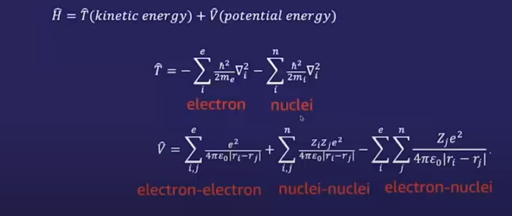
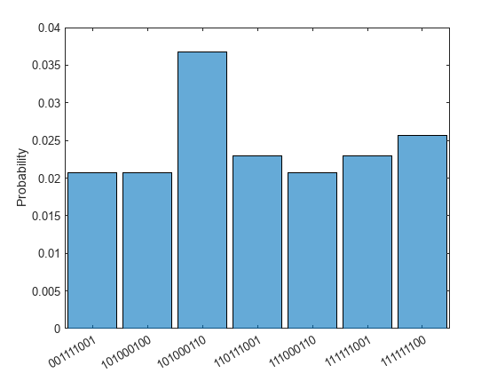

Exploring Quantum Mechanics and Protein Structures
The Hamiltonian is a fundamental concept in quantum mechanics that describes the total energy of a quantum system. It includes terms for kinetic energy, potential energy, and any interactions within the system.
The Hamiltonian operator, often denoted as Ĥ, acts on the wavefunction of a quantum system to calculate the energy of that system. The time-independent Schrödinger equation ĤΨ = EΨ is central to these calculations, where Ĥ represents the Hamiltonian operator, Ψ is the wavefunction, and E is the energy eigenvalue.
The Hamiltonian allows us to compute the quantum energy levels and understand the behavior of quantum systems accurately.
In the context of protein folding, the Hamiltonian can be used to model the interactions and energies of amino acids within a protein structure. By defining the Hamiltonian for a protein system accurately, we can simulate and predict the low energy states of protein folding.
The goal is to find the conformation (shape) of the protein that corresponds to the lowest energy state, as proteins tend to adopt stable configurations with minimal energy.
The energy terms in the Hamiltonian for protein folding typically include bond energies, angle energies, dihedral energies, and non-bonded interactions such as van der Waals and electrostatic energies.
Long time evolution of a quantum ensemble (mixed state) in an 1D anharmonic potential well, as visualized in phase space by the w:Wigner quasiprobability distribution. Because the potential well is not harmonic, the time-evolution is nontrivial. In the quantum case we have a similar swirling motion, but because of the uncertainty principle, there is a limit to how fine the swirling can become. As a result, all the subtle correlations stay visible forever. So, the way Gibbs explained entropy increase by finer and finer mixing doesn't apply so nicely in quantum mechanics. In fact, the quantum version will even show recurrences at some times, where the state goes back to resemble the original state. I have not tried to find these recurrence times and they are likely very long, given that there are dozens of slightly distinct frequencies are at play here.
Technical details:
The ensemble starts out as roughly a rectangle in phase space (with blurred edges as necessary due to uncertainty principle); it was constructed using a statistical mixture of hundreds of gaussian wavepackets of various center positions and center momenta. Because they overlap, however, this doesn't mean there are hundreds of different distinct states. Rather, its von neumann entropy is only 2.368×k, i.e., by Schmidt decomposition it can be roughly approximated as a mixture of something like exp(2.368) ≈ 11 distinct pure states. In terms of the energy eigenstates, it spans about 42 energy eigenstates, but with significant correlations. Since the time-evolution is unitary, the von neumann entropy does not change with time.
In contrast the equilibrated counterpart to this (see image) has higher entropy of 3.739×k, i.e., roughly ~42 distinct pure states. These equilibium pure states are the energy eigenstates: the time-averaging removes all the correlations between energy eigenstates of differing energy, and since all the energies are distinct in this case, the equilibrated version is a simple diagonal density matrix in the energy eigenbasis.
The simulation only included the right-side potential well of this double-well potential, for reasons of speed. This artificially forbids quantum tunnelling to the left well, but we would not expect significant tunnelling to ever occur anyway because this is an asymmetric double well which has not been finely tuned to resonance. Not being tuned for resonance, this means the left-well and right-well energy ladders won't line up (unless by accident) to within the required degree, and so the eigenstates of the two wells will not hybridize and will instead remain cleanly separated into almost purely left-side and purely right-side eigenstates.